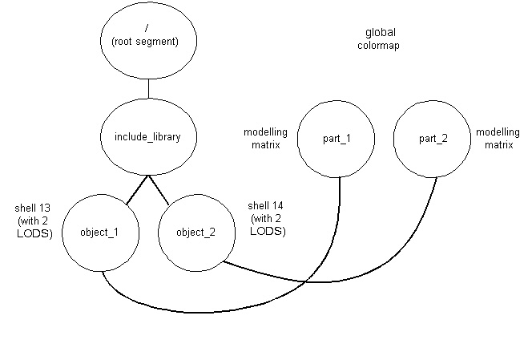

1.1 Compiling and Linking
2.1 Writing
2.1.1 Overview
2.1.2 Multi-Purpose Opcode Handlers
2.1.3 Compression
2.1.4 Using the TKE_View opcode
2.1.5 Referencing External Data Sources
2.1.6 Controlling the Quality of the Streaming Process
2.1.7 Creating an HSF with LODs
2.1.8 Writing Examples
2.1.9 Writing Options
2.3 Controlling the Reading and Writing Process
2.5 HOOPS/3dGS Classes
3.2 Performing Streaming on a Separate Thread
4.2 Versioning and Storing Additional User Data
4.3 Tagging HSF Objects to Associate User Data
5.1 Rendering
5.1.1 Scene-graph organization
5.1.2 Shell organization
5.1.3 Polygon handedness
1. Because an HSF file is essentially an archive of the HOOPS/3dGS scene-graph contents (geometry, attributes, and segments) it is important to understand how the scene-graph should be organized, and what geometry and attributes are supported. Refer to the HOOPS/3dGS Programming Guide for information on scene-graph architecture/usage and details on supported geometry and attributes. The HOOPS/3dGS Reference Manual provides specific details on geometry types and multi-option attributes. (The HOOPS/3dGS Reference Manual is located in the HOOPS/3dGS section of the documentation.)
2. An understanding of HSF opcodes/objects, opcode handlers, and general HOOPS/Stream Toolkit architecture. This information is reviewed in the HOOPS/Stream Technical Overview
.
2.1.1 Overview
As reviewed in the HSF File Architecture document, an HSF file must have the following structure:
<TKE_Comment> Required - contents denote file version
<opcode for a scenegraph object>
.
.
.
<opcode for a scenegraph object>
<TKE_Termination> RequiredThis means that the first opcode exported to the file must be TKE_Comment with contents that are specifically formatted to contain the file version (the TK_Header class manages this automatically, and is discussed later). The last opcode exported must be TKE_Termination.
To create an HSF file, you must first create a BStreamFileToolkit object, and then manually create and initialize opcode-handlers (or custom objects derived from them) and export their contents.
Opcode handlers are derived from BBaseOpcodeHandler. This is an abstract class used as a base for derived classes which manage logical pieces of binary information. BBaseOpcodeHandler provides virtual methods which are implemented by derived classes to handle reading, writing, execution and interpretation of binary information. (The methods are called Read, Write, Execute and Interpret.) Execution refers to the process of populating application specific data structures with the binary information that has been read from a file or user-provided buffer within the Read method. Interpretation refers to the process of extracting application specific data to prepare it for subsequent writing to a file or user-provided buffer within the Write method.
Naming Conventions
Naming conventions for opcodes and opcode handlers are as follows:
HSF file opcodes - TKE_<opcode>
opcode handler classes - TK_<object-type>
Initializing OpcodesDuring file writing, you must first access the graphical and user data that you wish to export and initialize the opcode's data structures. You could do this initialization work in the Interpret method of the opcode handler and call that method prior to exporting the opcode to the file. The opcode handler could also be directly initialized via the public interface after construction.
Exporting Opcodes
After the 'interpretation/initialization' phase is complete, you must call the Write method of the opcode handler until writing of the current opcode is complete. This will export the opcode data to an accumulation buffer (of user-specified size) that must initially be passed to the toolkit. This buffer can then be exported to an HSF file or utilized directly. The sample code discussed later in this section contains a reusable 'WriteObject' function that encapsulates the work necessary to export an object to a file; with minor modification, it could be used to export an object to application data-structures, over a network, etc...
Resetting Opcodes
If an opcode handler object is going to be reused to deal with another chunk of data, then the BBaseOpcodeHandler::Reset method should be called. This reinitializes opcode handler variables and frees up temporary data.
2.1.2 Multi-Purpose and Utility Opcode Handlers
Some opcode-handlers can be used to process more than one opcode; when using these objects, the desired opcode must be passed into the opcode handler's constructor. (To find out which opcode handler supports each opcode, refer to the opcode registration list). For example, the TK_Color_By_Index opcode handler supports both the TKE_Color_By_Index opcode and TKE_Color_By_Index_16 opcode.
Additionally, some of the TK_XXX classes are not actually opcode handlers, but rather serve as utility classes which simply export more than one opcode. For example the TK_Header class will export both the TKE_Comment opcode (with contents denoting the file version) and TKE_File_Info opcode. The version number that will be exported by default is the latest version of the HSF file that the HOOPS/Stream Toolkit supports. This is defined in BStream.h via the TK_File_Format_Version define.
2.1.3 Compression
The HOOPS/Stream toolkit supports lossless LZ compression of the exported data. To enable compression, export the TKE_Start_Compression opcode. The toolkit will automatically be placed in 'compression mode' after this opcode is exported, and all subsequently exported opcodes will be compressed. To stop compression, export the TKE_Stop_Compression opcode. Typically, the TKE_Start_Compression opcode would be exported at the beginning of the file (but just after the TKE_Comment opcode which contains version information), and the TKE_Stop_Compression opcode would be exported at the end of the file (but just before the TKE_Termination opcode) Because this file wide LZ compression capability is lossless, provides good compression results, and is fairly efficient during both export and import, it should always be used.
Example:
Let's say we want to write out an HSF that contains a 'segment' opcode, and have the segment contain a single 'marker' opcode. (A marker is denoted by a single 3D point.) The HSF file would need to have the following structure:
<TKE_Comment>
<TKE_File_Info>
<TKE_Start_Compression>
<TKE_Open_Segment>
<TKE_Marker>
<TKE_Close_Segment>
<TKE_Stop_Compression>
<TKE_Termination>The code required to create this HSF file is here.
2.1.4 Using the TKE_View Opcode
It is very useful to store some information at the beginning of the file which denotes the extents of the scene, so that an application which is going to stream the file can setup the proper camera at the beginning of the streaming process. Otherwise, the camera would have to continually get reset as each new object was streamed in and the scene extents changed as a result.
The TKE_View opcode is designed for this purpose. It denotes a preset view which contains camera information, and has a name. An HSF file could have several TKE_View objects, for example, to denote 'top', 'iso', and 'side' views.
The HOOPS Stream Control and Plug-In (an ActiveX control and Netscape Plug-In that can stream in HSF files over the web), along with the various PartViewers provided by Tech Soft America, all look for the presence of a TKE_View object near the beginning of the HSF file with the name 'default'. If one is found, then the camera information stored with this 'default' TKE_View object is used to setup the initial camera.
If you (or your customers) are going to rely on the Stream Control or Plug-In to view your HSF data, then you should export a 'default' TKE_View opcode as discussed above. If you are going to create your own HSF-reading application to stream in HSF files that you've generated, then that application should have some way of knowing the extents of the scene at the beginning of the reading process; this can only be achieved if your writing application has placed scene-extents information at the beginning of the HSF file (probably by using the TKE_View opcode), and your reader is aware of this information.
Example:
An HSF with the TKE_View opcode, along with a segment containing polyline and marker objects would look like:
<TKE_Comment>
<TKE_File_Info>
<TKE_View>
<TKE_Start_Compression>
<TKE_Open_Segment>
<TKE_Polyline>
<TKE_Marker>
<TKE_Close_Segment>
<TKE_Stop_Compression>
<TKE_Termination>The code required to create this HSF file is here.
2.1.5 Referencing External Data Sources
The TKE_External_Reference opcode is used to represent a reference to external data sources. The reference would typically be a relative pathname but could also be an URL. This opcode is intended to be handled in a manner similar to TK_Referenced_Segment, where the scene-graph information located in the reference should be loaded into the currently open segment. For example, a reference of './left_tire.hsf' located immediately after a TKE_Open_Segment opcode would indicate that the HOOPS/3dGS scene-graph contained in left_tire.hsf should be created within the open segment. A reference of http://www.foobar.com/airplane.hsf would indicate that the .hsf resides at a website, and the reader must access the data (it may choose to first download the entire file and then display it, or stream the data in and display it incrementally)
2.1.6 Controlling the Quality of the Streaming Process
The quality of the graphics streaming process is essentially based on how quickly the user gets an overall feel for the scene. One common technique involves exporting lower Levels of-Detail (LODs) for 3D objects within the scene since they can stream in more quickly. Another technique involves ordering objects within the file so that the most important objects in the scene are ordered towards the front of the file. Objects which are larger and closer to the camera are typically the most important.
While the HOOPS/3dGS-specific 3dgs classes provide built in logic to create LOD representations of objects, as well as logic to smartly order geometry within the file (exporting LOD representations first and sorting them base on cost::benefit ratio), such logic is not currently supported by the base classes. This is primarily because the BStreamFileToolkit object doesn't 'know' where the data is, or how it is arranged. Since the developer is manually traversing their own graphics information and mapping it to HSF objects, LODs must be manually generated/exported and any ordering/sorting would need to be done by the developer.
2.1.7 Creating an HSF with LODs
A more practical example of an HSF file is one that contains a 'real world' scene-graph, including:
- shells containing several LODs, local attributes and compression/write options
- modeling matrices
- inclusions (instancing)
- colors, etc...After reviewing the Write Options section below, let's take the case where we want to write out the following scene-graph:

Since the main segment tree references other segments (each reference is denoted by a TKE_Include_Segment object), the segments in the 'include library' must come first in the file. Typically, it is desirable to have any LOD representations read in first so that the reading application (which may be incrementally streaming in the data) can quickly provide a rough depiction of the scene. Therefore, we need to store LOD representations of shells at the beginning of the file. The HOOPS/Stream Toolkit supports the concept of tagging, which enables the developer to first output a LOD representation of the shell, and then later output another LOD representation (or the full representation) of that same shell and associate back to the original shell. If you want to be able to maintain this association during reading, you must follow tagging procedures which are discussed later on, in section 4.3: Tagging HSF Objects. Since the graphical information is coming from a custom set of data structures, you will need to provide your own LOD representations for shells.
Note: LOD support contained in the HOOPS 3D Graphics System could still be leveraged in the case where you are manually creating an HSF file, where you could call the HOOPS/3dGS utility function 'HC_Compute_Optimized_Shell' to generate LODs. This requires access to the HOOPS/3dGS API, available as part of the HOOPS 3D Application Framework. Contact Tech Soft America for HOOPS/3dAF licensing details.
The following is one possible structure of the HSF file which represents the above scene-graph and orders the various representations of the shell primitives:
<TKE_Comment>
<TKE_File_Info>
<TKE_View>
<TKE_Start_Compression><TKE_Colormap>
<TKE_Open_Segment> // /include_library/object_1 segment
<TKE_Shell> // id=13, LOD 2 - output LOD 2
<TKE_Close_Segment><TKE_Open_Segment> // /include_library/object_2 segment
<TKE_Shell> // id=14, LOD 2 - output LOD 2
<TKE_Close_Segment><TKE_Open_Segment> // part_1 segment
<TKE_Include_Segment> // include the object_1 segment
<TKE_Modelling_Matrix> // give it a unique mod matrix
<TKE_Color_RGB> // apply a local color
<TKE_Close_Segment><TKE_Open_Segment> // part_2 segment
<TKE_Include_Segment> // include the object_2 segment
<TKE_Modelling_Matrix> // give it a unique mod matrix
<TKE_Close_Segment><TKE_Shell> // id=13, LOD 1 - output LOD 1 for the shells
<TKE_Shell> // id=14, LOD 1<TKE_Shell> // id=13, LOD 0 - output LOD 0 which is the original
<TKE_Shell> // id=14, LOD 0<TKE_Close_Segment>
<TKE_Stop_Compression>
<TKE_Termination>
The code required to create this HSF is here. Note how the example reuses opcode handlers in cases where more than one object of a specific type is going to be exported to the HSF file.
Non-Shell LODS
The LOD representation for a shell object is not restricted to a shell, but can be composed of one or more non-shell objects. For example, a circle or several polylines could be used as the LOD representation for a shell.
This is achieved by calling the TK_Shell::AppendObject method for each primitive to be used as part of the non-shell LOD representation. This would be called during initialization of the TK_Shell data (typically performed within the Interpret method) TK_Shell::AppendObject does not make any copies of the object passed into it; it only stores a pointer to objects. Therefore, all objects need to be manually cleaned up before using the shell opcode handler again, or when deleting the object. TK_Shell::PopObject should be used to obtain the pointer to the next object and remove it from the shell handler's list of LOD objects.
The sample code reviewed above (simple_hsf3.cpp) includes an example of using a non-shell LOD (a circle) to represent LOD level 2 of the shell. Note that cleanup of the non-shell LOD object(s) is performed within the overloaded Reset method, which calls the base class' Reset method. This ensures that when the shell opcode handler is reset, everything will be properly cleaned up before the opcode handler object is reused. The sample code performs cleanup o the non-shell LOD objects in the Reset method instead of an overloaded constructor method because it reuses the custom shell opcode handler.
2.1.8 Writing Examples
We've seen examples of how to export several opcodes to an HSF file. Most opcodes are 'self-contained', and it is fairly easy to see how to initialize them by looking at the definition of the associated opcode-handler class. The protected data members must be initialied, and public functions are provided for doing so. However, some graphical attributes are more complicated in that they require export of several opcodes. This section will cover more complex situations such as these, and will evolve over time.
One of the more complex graphicsl attributes is textures. Recalling that HSF objects are essentially archives of HOOPS/3dGS scene-graph objects, it is useful to review how texture-mapping works in HOOPS/3dGS. First, an image must be defined. Then, a texture must be defined which refers to that image. The color of the faces of a shell (or mesh) must be set to the texture name, and finally, the vertex parameters must be set on the vertices of the shell (which map into the texture)
To export this info to an HSF file, the following opcodes must be exported:
1. TK_Image
2. TK_Texture (this must be exported after TK_Image, since it refers to it)
3. TK_Color (this must be exported after TK_Texture, since it refers to it)
An example of how to export a shell with a texture applied is located here.
2.1.9 Write Options
The HOOPS/Stream Toolkit supports a variety of compression and streaming options which are used when exporting an HSF file. It may be desirable to modify these settings based on how your model is organized, the size of the model, and the amount of preprocessing time that is acceptable.
Write options are set on the toollkit by calling BStreamFileToolkit::SetWriteFlags File write options are specified by TK_File_Write_Options enumerated type in BStream.h
When using the base classes to manually map graphics information to an HSF file, only a subset of the file-write-options are supported, and the details are listed in each of the option descriptions below:
Supported |
Unsupported |
TK_Full_Resolution_Vertices |
TK_Suppress_LOD |
TK_Full_Resolution_Normals |
TK_Disable_Priority_Heuristic |
TK_Full_Resolution |
TK_Disable_Global_Compression |
TK_Force_Tags |
TK_Generate_Dictionary |
TK_Connectivity_Compression |
|
TK_First_LOD_Is_Bounding_Box |
Those in the "unsupported" column are there because they only make sense in the context of a specific graphics system, and dictate overall file organization. (They are supported by the '3dgs' classes) Users of the base classes are free to implement them (or not implement them), according to the needs of their application. All bits are by default off (set to zero). The following reviews the various types of options, along with their default values and usage:
A. Compression
Global Compression
The toolkit performs LZ compression of the entire file using a public domain component called 'zlib'; this is a lossless compression technique that permits pieces of the compressed file to be streamed and decompressed, and is computationally efficient on both the compression and decompression sides.
Usage: off by default; needs to be manually enabled by exporting TKE_Start_Compression and TKE_Stop_Compression opcodes to the file. Setting TK_Disable_Global_Compression will have no effect.
The HOOPS/Stream Toolkit will also compress raster data by default, using a JPEG compression utility. The compression level of this data can be controlled by calling BStreamFileToolkit::SetJpegQuality
Geometry Compression
Geometry compression is currently focused on the 'shell' primitive, (represented by the TKE_Shell opcode, and handled by the TK_Shell class) This is the primary primitive used to represent tessellated information. Datasets typically consist primarily of shells if the data sets originated in MCAD/CAM/CAE applications.
A TK_Shell object has local write suboptions which may or may not reflect the directives from the BStreamFileToolkit object's write options. A public function, TK_Shell::InitSubop() is available to initialize the write suboptions of TK_Shell with the BStreamFileToolkit write options. You should setup your desired write options on the BStreamFileToolkit object, and then call InitSubop within your shell opcode-handler's constructor or Interpret function. The shells' local suboptions may also be directly modified by calling TK_Shell::SetSubop(), and passing in any combination of the options defined in BOpcodeShell.h
Vertex Compression - This involves encoding the locations of shell vertices, providing reduction in file size in exchange for loss of coordinate precision and slightly lower visual quality. The degradation in visual quality is highly dependent on the topology of the shell, as well as how the normals information is being exported. The function BStreamFileToolkit::SetNumVertexBits() allows the developer to control the number of bits of precision for each vertex. The default is 24 (8 each for x, y and z)
Usage: Enabled by default within the BStreamFileToolkit object. Disabled by setting TK_Full_Resolution_Vertices and/or TK_Full_Resolution.Usage is controlled at the local shell level by calling TK_Shell::SetSubop and using the TKSH_COMPRESSED_POINTS define. For example, to turn this on, you would call SetSubop(TKSH_COMPRESSED_POINTS | GetSubop()) To turn this off, you would call SetSubop(~TKSH_COMPRESSED_POINTS & GetSubop())
Normals Compression - Normals will be automatically exported to the HSF file if normals were explictity set on geometry using the TK_Polyhedron::SetNormals(). Normals compression involves encoding vertex normals, providing reduction in file size in exchange for lower visual quality. Again, the degradation in visual quality is highly dependent on the topology of the shell, as well as how the normals information is being exported. HOOPS/Stream transmits compressed normals for vertices that have been compressed, or if a normal has been explicitly set on a vertex. Surfaces that had gradual curvature over a highly tessellated region can look faceted due to the aliasing of the compressed normals. The function BStreamFileToolkit::SetNumNormalBits() allows the developer to greatly reduce or effectively remove such aliasing at the cost of transmitting more data per normal. The default is 10.
Usage: Enabled by default within the BStreamFileToolkit object. Disabled by setting TK_Full_Resolution_Normals and/or TK_Full_Resolution.Usage cannot currently be controlled at the local shell level.
Connectivity compression - This compresses 'shell' connectivity information. This compression technique can provide compelling reductions in files sizes for datasets that contain many 'shell' primitives, but can also be a computationally intensive algorithm depending on the size of individual shells. Developers will need to decide for themselves whether the reduced file size is worth the extra computation time.
Additionally, depending on the topology of the shell, the algorithm may provide limited compression benefit or have to 'punt' after performing substantial work, thereby providing little to no additional file size reduction in exchange for extra computation time. Therefore, developers should do some experimentation with their specific class of datasets to see if the option is buying them any reduction in file size. If files sizes for typical files are the same both with and without the option set, then this compression option should be disabled when exporting an HSF file. Some specific examples of when the algorithm will punt or perform poorly are shells that contain many backwards faces (which also impact rendering performance and should generally be avoided anyway!), or contain certain complex combinations of 'handles' ( a teapot or a torus each have one handle) and holes (i.e. a flat plate that has a hole in the middle). In general, the connectivity compression algorithm will perform well with most of these cases, but developers should still take some time to investigate the [extra export time vs. file-size reduction] of their datasets with and without this option enabled.Usage: Disabled by default within the BStreamFileToolkit object. Enabled by setting TK_Connectivity_Compression.
Usage is controlled at the local shell level by calling TK_Shell::SetSubop and using the TKSH_CONNECTIVITY_COMPRESSION define. For example, to turn this on, you would call SetSubop(TKSH_CONNECTIVITY_COMPRESSION | GetSubop()) To turn this off, you would call SetSubop(~TKSH_CONNECTIVITY_COMPRESSION & GetSubop())
Part of the HSF specification is a "dictionary" of file offsets. Its main purpose is to allow selective refinement of graphic database detail. The 3dgs classes will write such a dictionary at the end of the file if the TK_Generate_Dictionary write option is set. Though it would also be possible to create a dictionary with the base classes, there is not yet a public interface to do so. Users of the base classes who would like to take advantage of this area of HSF should contact technical support.
C. LOD Options
Three of the file write options (TK_Suppress_LOD, TK_First_LOD_Is_Bounding_Box and TK_Disable_Priority_Heuristic) control the existence and/or appearance of levels of detail. As with geometry compression (see above), these options are currently geared towards the TK_Shell opcode.
TK_First_LOD_Is_Bounding_Box: as the name suggests, this option causes the first LOD of any shell to be replaced with its axis aligned bounding box. The final argument to TK_Shell::InitSubop() is a boolean, is_firstpass. The shell is replaced with its bounding box only if the write option TK_First_LOD_Is_Bounding_Box and the is_firstpass argument to InitSubop() are set.
TK_Suppress_LOD and TK_Disable_Priority_Heuristic are not supported and will not have any effect on the HSF contents written by base_stream. If they are to be respected at all, they are completely the user's responsibility. TK_Suppress_LOD is meant to prevent any levels of detail from getting into the file. TK_Disable_Priority_Heuristic, will indicate not to sort detail levels according to some heuristic that weighs cost versus benefit -- putting the most important things first.
D. TaggingThe toolkit supports the concept of tagging, discussed in section 4.3: Tagging HSF Objects Setting TK_Force_Tags will cause tags to be automatically generated by the toolkit during the writing process. (Note: tags will always be generated for shells regardless of the value of this write option.)
E. Global Quantization
Setting TK_Global_Quantization will cause any required quantization to be global (bbox of scene) instead of local (bbox of individual geometry) . This is useful for situations where high-level objects are split up into mulitple shells, since it avoids cracks between the sub-objects (Using a solid modeling example, this would be a situation where a shell was used for each 'face', instead of using a single shell for each higher-level 'body'.) Regardless of this flag, however, local quantization applies until the first TKE_Bounding_Info. This flag is off by default.
#include "BStream.h"
void my_reading_function()
{
TK_Status status;
BStreamFileToolkit * tk = new BStreamFileToolkit;
tk->SetOpcodeHandler (TKE_Open_Segment, new TK_My_Open_Segment); tk->SetOpcodeHandler (TKE_Close_Segment, new TK_My_Close_Segment); tk->SetOpcodeHandler (TKE_Shell, new TK_My_Shell);
status = TK_Read_Stream_File("sample.hsf", tk);
if (status == TK_Version)
{
MessageBox("This file was created with a newer version of the
HOOPS/Stream Toolkit.\nTo view it this application's
version of the toolkit will need to be updated.");
} else if (status = TK_Error)
MessageBox("Error reading file.");
}
In addition to the high-level read/write functions which support reading from and writing to a disk file, the HOOPS/Stream Toolkit also supports writing and reading HOOPS Stream File information to and from a user-specified location. This is a powerful feature which enables the application developer to store the HOOPS Stream File information within a custom application specific file format (or any location) and retrieve it from the custom location, rather than use a separate .hsf file. More importantly, the data can be incrementally streamed into the reading application's scene-graph.
For example, many technical applications that also visualize 2D/3D information utilize a custom file format that contains application specific data. When the file is read in, the application then goes through a laborious process of recreating the 2D/3D information associated with the application data. By utilizing the HOOPS/Stream Toolkit, a developer could cache the scene-graph geometry in their own proprietary file format file by actually embedding the .hsf information in their file. File load time and initial rendering is drastically reduced, the custom file format remains intact, and the highly compressed .hsf information minimizes the increase of file size.
Support for controlling the reading and writing process is provided by the BStreamFileToolkit class. An instance of an BStreamFileToolkit object should be created for each file that is being read or written, and then either the ParseBuffer or GenerateBuffer method should be called to control reading and writing, respectively.
2.3.2 Controlling Reading
First review section 2.2: Reading HSF Files. To control the reading process, a piece of binary data that has been read from an .hsf file is presented to the BStreamFileToolkit object for parsing and insertion into your custom data structures by calling the BStreamFileToolkit::ParseBuffer method. This method doesn't care where the data originated from, but simply reads the data from the buffer passed to it, and calls the Read and Execute methods of the opcode handler registered to handle the current opcode being processed. Therefore, if you want to access custom HSF objects, you will need to have first registered custom opcode handlers for the objects of interest (and implement the Execute methods to do something with the data.)
The following code example demonstrates how data could be manually read from a local file and inserted into your custom data structures using ParseBuffer. A file is open and pieces of data are read from it using the BStreamFileToolkit wrapper functions for file opening and reading ( OpenFile() and ReadBuffer() ) Data is continually read and passed to ParseBuffer until it returns TK_Complete, indicating that reading is complete, or until an error occurs.
void Read_Stream_File (char const * filename) { auto char block[BUFFER_SIZE]; auto TK_Status status = TK_Normal; auto int amount;BStreamFileToolkit * tk = new BStreamFileToolkit;// our sample custom toolkit only cares about segment and shells tk->SetOpcodeHandler (TKE_Open_Segment, new TK_My_Open_Segment); tk->SetOpcodeHandler (TKE_Close_Segment, new TK_My_Close_Segment); tk->SetOpcodeHandler (TKE_Shell, new TK_My_Shell);if ((status = tk->OpenFile (filename)) != TK_Normal) return status;do { if (tk->ReadBuffer (block, BUFFER_SIZE, amount) != TK_Normal) break;status = tk->ParseBuffer (block, amount);if (status == TK_Error) { // whatever... break; } } while (status != TK_Complete);tk->CloseFile ();delete tk; }2.3.3 Controlling Writing
Controlling writing using the base classes is already explained in Section 2.1: Writing HSF Files Since writing out an HSF file using the base classes must be done manually anyway (because the developer has to supply their own logic ot traverse the graphics information and directly export HSF objects), exporting to a buffer rather than a file is just a special case of the WriteObject function described in the example programs in Section 2.1 The only difference would be to omit the 'fwrite' call, and deal with the HSF data buffer directly. (Perhaps by sending it to another application, or exporting it to your own non-HSF file, etc...)
void Stream_HSF_File (char const * filename)
{
auto char block[BUFFER_SIZE];
auto TK_Status status = TK_Normal;
auto int amount;
BStreamFileToolkit * tk = new BStreamFileToolkit;
// our sample custom toolkit only cares about segment and shells tk->SetOpcodeHandler (TKE_Open_Segment, new TK_My_Open_Segment); tk->SetOpcodeHandler (TKE_Close_Segment, new TK_My_Close_Segment); tk->SetOpcodeHandler (TKE_Shell, new TK_My_Shell);
if ((status = tk->OpenFile (filename)) != TK_Normal) return status;
do {
if (tk->ReadBuffer (block, BUFFER_SIZE, amount) != TK_Normal)
break;
status = tk->ParseBuffer (block, amount);
MyGraphicsUpdateFunction();
if (status == TK_Error) {
// whatever...
break;
}
} while (status != TK_Complete);
tk->CloseFile ();
delete tk; }
#include "BOpcodeShell.h"
class My_TK_Shell : public TK_Shell
{
protected:
int my_stage; // denotes the current processing stage
public:
My_TK_Shell() { my_stage = 0; }
TK_Status Execute (BStreamFileToolkit & tk) alter; TK_Status Interpret (BStreamFileToolkit & tk, HC_KEY key, int lod=-1) alter;
TK_Status Read (BStreamFileToolkit & tk) alter; TK_Status Write (BStreamFileToolkit & tk) alter;
TK_Status Clone (BStreamFileToolkit & tk, BBaseOpcodeHandler **) const;
void Reset () alter; };
Stage 0: Output the default TK_Shell object by calling the base class' Write function
( TK_Shell::Write )
Stage 1-4: These stages write out the custom data (the temperature array) as well as formatting information required to denote a block of user data.
1. Output the TKE_Start_User_Data opcode to identify the beginning of the user data
2. Output the # of bytes of user data.
3. Output the user data itself.
4. Output the TKE_Start_User_Data opcode to identify the end of the user data
TK_Status My_TK_Shell::Write (BStreamFileToolkit & tk)
{
TK_Status status;
switch (m_stage)
{
// call the base class' Write function to output the default
// TK_Shell object
case 0:
{
if ((status = TK_Shell::Write(tk)) != TK_Normal)
return status;
my_stage++;
} nobreak;
// output the TKE_Start_User_Data opcode
case 1:
{
if ((status = PutData (tk, (unsigned
char)TKE_Start_User_Data)) != TK_Normal)
return status;
my_stage++;
} nobreak;
// output the amount of user data in bytes; we're writing out
// 1 float for each vertex value, so we have 4*m_num_values
case 2:
{
if ((status = PutData (tk, 4*m_num_values)) != TK_Normal)
return status;
m_progress = 0;
my_stage++; } nobreak;
// output our custom data, which in this example is an array of
// temperature values which are stored in an application
// data structure called 'temperature_values'
// since the temperature values array might always be larger
// than the buffer, we can't just "try again" so always generate
// piecemeal, with m_progress the number of values done so far
case 3:
{
if ((status = PutData (tk, temperature_values,
m_num_values)) != TK_Normal)
my_stage++;
} break;
case 4:
{
// output the TKE_End_User_Data opcode which denotes the end
// of user data
if ((status = PutData (tk, (unsigned
char)TKE_End_User_Data)) != TK_Normal)
return status;
my_stage = -1;
} break;
default: return TK_Error; }
return status; }
TK_Status My_TK_Shell::Read (BStreamFileToolkit & tk)
{
TK_Status status;
switch (my_stage)
{
case 0: {
if ((status = TK_Shell::Read (tk)) != TK_Normal)
return status;
my_stage++;
} nobreak;
case 1:
{
unsigned char temp;
// look at the next byte since it may not be the // TKE_Start_User_Data opcode if ((status = LookatData(tk, temp)) != TK_Normal) return status;
if (temp != TKE_Start_User_Data) return TK_Normal; // there isn't any user data, so return!
// get the opcode from the buffer if ((status = GetData (tk, temp)) != TK_Normal) return status; my_stage++; } nobreak;
case 2:
{
int length;
// get the integer denoting the amount of user data if ((status = GetData (tk, length)) != TK_Normal) return status; my_stage++; } break;
case 3:
{
// get the temperature value array; this assumes we've
// already determined the length of the array and identified
// it using m_num_values
if ((status = GetData (tk, temperature_values,
m_num_values)) != TK_Normal)
return status;
my_stage++;
} break;
case 4:
{
unsigned char temp;
// get the TKE_End_User_Data opcode which denotes the end of // user data if ((status = GetData (tk, temp)) != TK_Normal) return status;
if (temp != TKE_End_User_Data) return TK_Error;
my_stage = -1; } break;
default: return TK_Error; }
return status; }
void My_TK_Shell::Reset()
{
my_stage = 0;
TK_Shell::Reset();
}
TK_Status My_TK_Shell::Clone (BStreamFileToolkit & tk, BBaseOpcodeHandler **newhandler) const
{
*newhandler = new My_TK_Shell();if ( *newhandler != null )return TK_Normal;elsereturn tk.Error();
}
tk->SetOpcodeHandler (TKE_Shell, new My_TK_Shell);
4.2.1 Versioning
As discussed in the previous section, one way for you to check if the file contains custom HSF objects that you know/care about is to always use custom opcode handlers, which then check during the reading process to see if there is user data. However, there is one deliberate flaw to the example approach and its corresponding sample code. If the code sees a custom chunk of data following the default TK_Shell object (by noticing a TKE_Start_User_Data opcode), it simply goes ahead and reads the data, assuming that it was data written out by our custom shell handler. However, what if the file was written out by a custom handler that was not ours?! In this case, we wouldn't understand the information and don't care about it. However, the sample code does not properly check if the data is something that we know/care about. Because it is assuming a specific amount of user data, and this is an unsafe assumption, the code is flawed.
One potential solution is to add another stage during the writing process: after writing out the TKE_Start_User_Data opcode and the # of bytes of custom data, we could also write out some special value which 'marks' the custom data as 'our' custom data. Then, during reading, we would check that special value to confirm if it was our data. However, this solution is a bit cumbersome since it means that our custom logic would always need to be executed, and to properly handle the case, we'd also have to either A) peek at the data up through the special value and then return from the function (so that the default toolkit will skip the custom data) or B) manually skip through the custom data ourselves by utilizing the '# of bytes' information.
A better solution would be to store some type of additional versioning information in the beginning of the file which could be checked once, and then we would create and register our custom HSF object handlers only if the file was verified to be a custom version that we created with our custom toolkit. Recalling that the first opcode in an HSF file is always a TKE_Comment opcode (with contents that are specifically formatted to denote file version information), you could export another TKE_Comment opcode immediately after the first one with contents that contain additional version information. For example:
<TKE_Comment> standard version information; contents: HSF V6.30
<TKE_Comment> custom version information; contents: SuperCAD V2.00
<data opcode>
.
.
.
<data opcode>
<TKE_Termination>
The following section details how additional information could be added at the beginning of the file (prior to default HSF objects) as well as at the end of the file.
4.2.2 Storing Additional User Data
In addition to providing support for attaching/retreiving user data to/from default HSF objects (by enabling overloading of the Write and Read methods of opcode handlers), the HOOPS/Stream Toolkit also provides general support for exporting user data via the TK_XML, TK_User_Data and TK_URL opcode handlers, which export the TKE_XML, TKE_Start_User_Data, and TKE_URL opcodes, respectively. This gives developers the ability to store discrete chunks of user data that may (or may not) be associated with the HSF objects. The TK_XML opcode handler would be used to store/retreive XML data, and the TK_User_Data opcode handler would be used to store/retrieve custom binary data. The TK_URL opcode handler provides informational links corresponding to data (as opposed to TKE_External_Reference which provides additional content)..
When writing out user data within the Write method of your custom TK_User_Data object, be sure to review the process of Formatting User Data.
To handle import/export of user data, you will need to register a custom opcode handler for the TKE_Start_User_Data opcode. This is because the toolkit's default handler (TK_User_Data) simply skips over the user data that is read in. (Remember that custom opcode handlers such as My_TK_Shell described in the previous section typically only handle user data that is appended to a default HSF object. If you are adding discrete chunks of user data to the file, then you must Write/Read that data with an entirely new TK_User_Data handler) The following steps are involved:
1. Define a new class derived from TK_User_Data (which we'll call TK_My_User_Data) that overloads the Write and Read methods to process the extra user data.
#include "object.h"class TK_My_User_Data : public TK_User_Data { protected:int my_stage; // denotes the current processing stagepublic:TK_My_User_Data(unsigned char opcode) : TK_User_Data(opcode) {}// Within Read(), we may need to verify that the user data is 'our' // user data. As previously noted, one approach is to write out // versioning information at the beginning of the file. // If it is not our custom version of the file, we would NOT // even register this custom user data opcode handler; instead // we would allow the default TK_User_Data handler to take care of // the TKE_Start_User_Data opcode by simply skipping over any user datavirtual TK_Status Read (BStreamFileToolkit & tk) alter;virtual TK_Status Write (BStreamFileToolkit & tk) alter; };2. Instruct the toolkit to use our custom user data opcode handler in place of the default handler by calling SetOpcodeHandler. We specify the type of opcode that we want to replace, and pass in a pointer to the new opcode handler object.
tk->SetOpcodeHandler (TKE_Start_User_Data, new TK_My_User_Data(TKE_Start_User_Data));This will also cause the toolkit to delete it's default handler object for the TKE_Start_User_Data opcode. Note: As the HOOPS/Stream Reference Manual points out, all opcode handler objects stored in the BStreamFileToolkit object will be deleted when the BStreamFileTookit object is deleted. Therefore, we would not delete the TK_My_User_Data object created in the above example.
Custom handling of the TKE_XML opcode would be similar to the above, but you would instead register a custom opcode handler for the XML opcode that is derived from TK_XML.
[50, <the value returned from KeyToIndex>]
int flags = TK_Force_Tags;
BStreamFileToolkit * tk = new BStreamFileToolkit;
BStreamFileToolkit->SetWriteFlags(flags);
tk->SetOpcodeHandler (TKE_Polyline, new My_TK_Polyline (TKE_Polyline));
TK_Status My_TK_Polyline::Write(BStreamFileToolkit &tk)
{
TK_Status status;
// write out the default object if (m_stage!=-1) status = TK_Polyline::Write(tk);
// we are in complete with writing the default object, so we now // tag it if (m_stage==-1) status = Tag( tk, -1 );
return (status); }
5.1.1 Scene-graph organization
An HSF file is essentially an archive of a HOOPS/3dGS scene-graph. Even if HOOPS/3dGS is not used as the graphics system for rendering, the organization of the scene-graph inside the HSF file can affect rendering performance. Optimal scene-graph structure is covered in the 3D With HOOPS book, and is also discussed in the articles at developer.hoops3d.com Critical areas include keeping segments to a minimum, organizing the scene-graph based on attributes rather than geometry, using 'shell' primitives whenever possible to represent tessellated data, and making sure that the shells are as large as possible.
Keep in mind that a scene-graph is meant to serve as an optimal organization of the graphical information, rather than higher-level application information such as 'assemblies', 'parts', etc... Structuring the scene-graph based on the organization of higher-level application data-structures, while perhaps convenient, can severely compromise rendering performance and memory usage inside the application which is doing the reading. However, the HOOPS/Stream Toolkit's range of HSF opcode objects and customization facilities makes it easy to associate custom (non scene-graph) data with the scene-graph objects and store them in the HSF file, or store the external to the HSF file (perhaps as XML data).
5.1.2 Shell organization
The TK_Shell opcode-handler provides support for defining a shell via tristrips. Drawing shells using tristrips maximizes rendering performance. Therefore, shell objects should be exported via tristrips if they are available. This is done by formatting the facelist pased into TK_Shell::SetFaces to contain tristrips, and setting the TKSH_TRISTRIPS bit in the shell's suboption variable using TK_Shell::SetSubop. For example:
TK_Shell::SetSubop( TKSH_TRISTRIPS | GetSubop() );5.1.3 Polygon handedness
Polygon handedness is a basic vector graphics concept. The specifics are covered in the 3D With HOOPS book, but in general, the existence of a polygon handedness setting for an object enables an application to render that object using backplane culling. This typically results in a signficant increase in rendering performance.
If a TK_Shell object is being exported to an HSF and can (or should) have a handedness defined for its faces, it is critical to make sure that the handedness attribute is exported to the HSF file. This is achieved by using the TK_Heuristics object to export the TKE_Heuristics opcode.
This is important because:
1. The reading application may not be able to determine what a proper handedness is for the shells
2. Even if the reading application can determine a proper handedness setting, the scene may look incorrect if the setting is made in the application and wasn't made at the time of file export (and hence stored with the shells). This is because the HOOPS/Stream Toolkit will explicitly export compressed normals during the writing phase, and it is possible that these normals won't be consistent with the handedness setting made in the reading application.
Note: if the handedess attribute is going to be exported for a shell or group of shells, it is important to make sure that all the faces in the shell are all defined with a consistent point ordering. Otherwise some faces will be 'backwards', and the object will have holes in it if a viewing application renders the object by relying on the existence of a handedess setting to perform backplane culling.